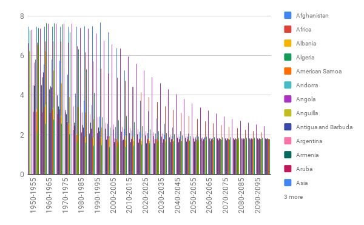

Data Provenance: The dataset in this chart is the Total fertility rate (live births per woman),which contains 16 countries.For every country,we show the rate from 1950 to 2100.
1.Picture 
2.Embedded chart
3.Line Chart